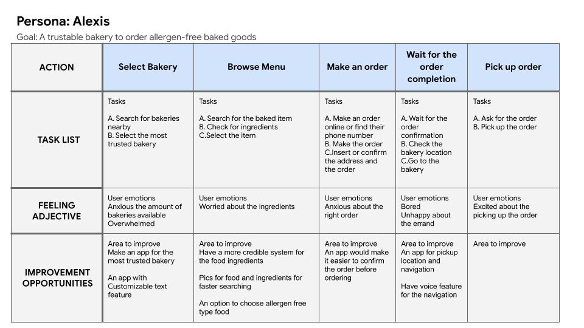
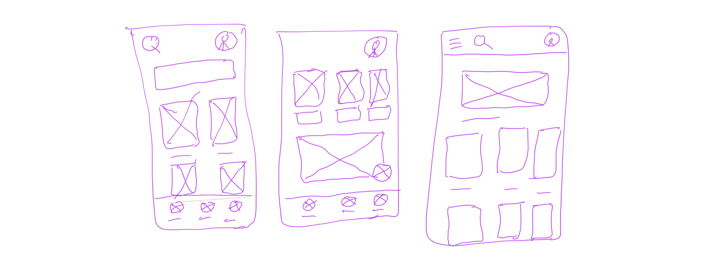
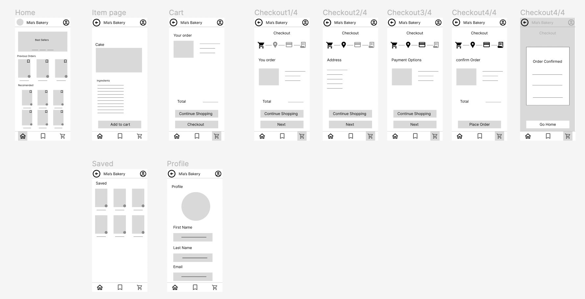
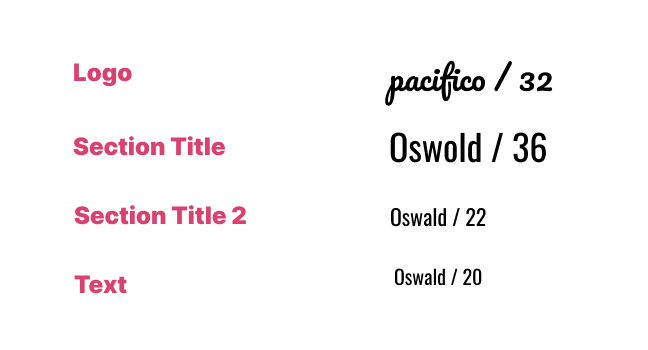
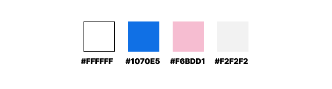
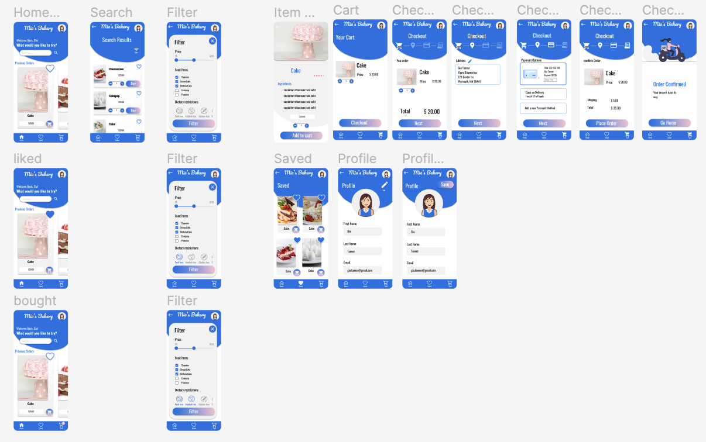
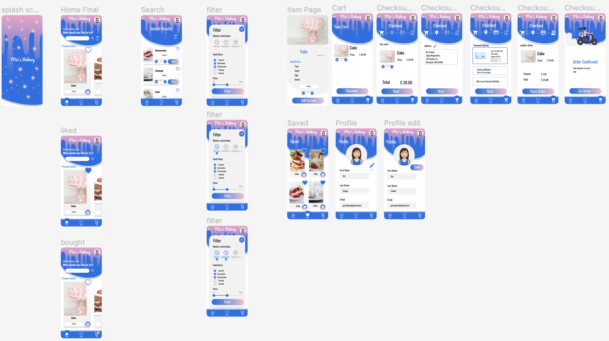

Mia’s Bakery is a bakery located in the city. Mia’s Bakery is created to be a trusted source of baked goods for customers with dietary restrictions and allergies. It offers all kinds of baked goods and it delivers to your place anytime anywhere.
Project Duration: June 2022 to October 2022
Full time employees can’t find a trustable bakery app to buy healthy allergen-free baked goods with a clear ingredients.
Design a trustable bakery app that delivers healthy allergen-free baked goods
UX designer responsible for the entire process
Responsiblities
I conducted made up interviews to understand the problems the users are facing. Two user groups have been identified. The first user group was busy with unpredictable schedule , single full time workers and health conscious. The Second user group is married with kids who has allergies and visually impaired . The first user group prefer pickup and the second group prefer delivery.
This journey revealed that we need to improve the accessibility of the app.
Three versions for the app’s home screen. For the final version of the design I have chosen the versions with the navigation positioned at the bottom of the screen as it will be easily accessible for the user.
These are the designs before the usability study. Initial design based on assumptions and research. Here is the link for the low-fi prototype.
Two font families have been choosen. The logo is a cursive type of font, while the rest of the text is not cursive and san serif type of font for an easier readability
The blue color was choosen to indicate that Mia's Bakery is a brand that can be trusted and thus the customers will be loyal to the brand.'
These are the designs before the usability study. Iterated design based on first usability study. Here is the link for the hi-fi prototype.
These are the final designs after the second usability study. Iterated design based on usability study round 2. Here is the link for the hi-fi prototype.
This app makes the life of busy people with dietary restrictions easy to order baked goods.
Usability studies are really important to make design decisions. We should not assume how the user would behave, it has to be backed up with data.